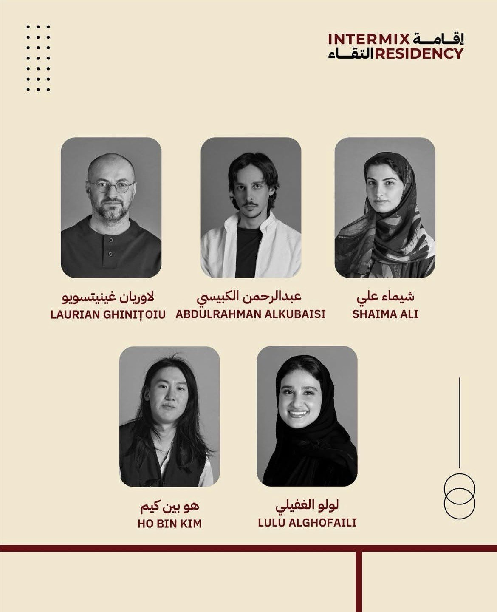
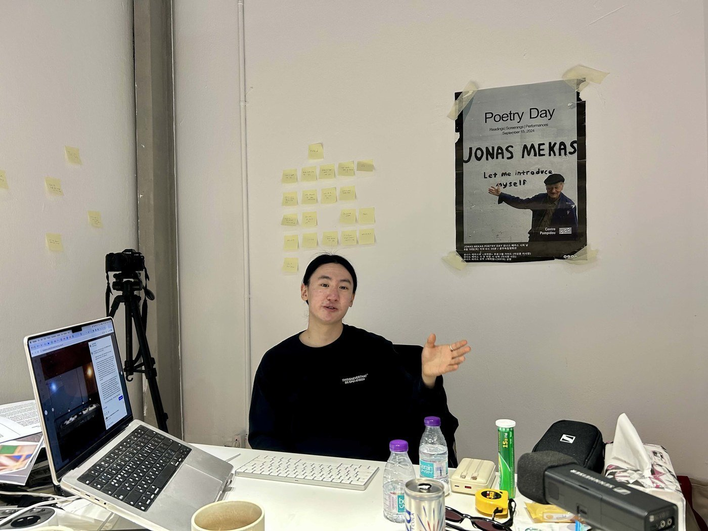
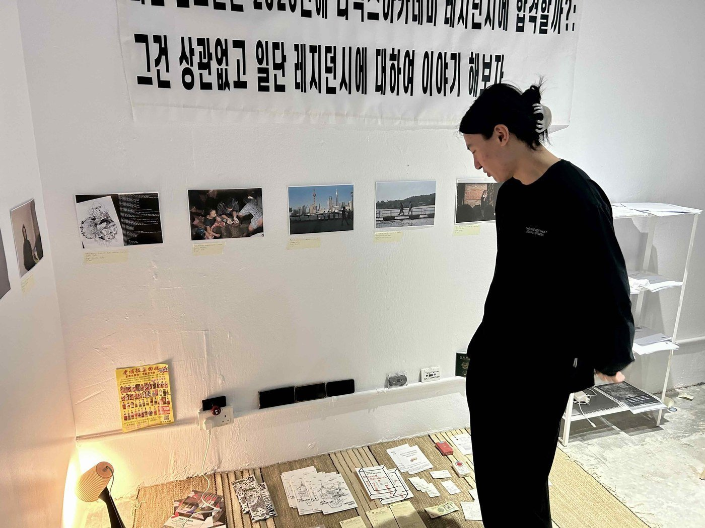

사우디아라비아 문화부 산하 비주얼 아트 커미션(Visual Arts Commission)은 2020년 설립된 기관으로, 회화·조각·사진 등 시각예술 분야의 창작 활동과 산업 발전을 지원하고 관련 정책을 추진하고 있다. 이 기관은 사우디 정부가 문화 산업 육성을 위해 설립한 11개 문화위원회 가운데 하나로, 전시와 포럼, 레지던시 프로그램 등을 통해 국내외 예술가 간 교류를 확대하고 있다. 현재 비주얼 아트 커미션은 국제 예술가 교류 프로그램 <인터믹스 레지던시(Intermix Residency)>를 운영하고 있다. 해당 프로그램은 1월 말부터 4월까지 약 3개월 동안 진행되며, 전 세계에서 총 15명의 작가가 오픈콜(Open Call)을 통해 선발되어 참여하고 있다. 이 가운데 한국 작가 김호빈이 레지던시에 참여해 작업을 이어가고 있다. 통신원은 레지던시 스튜디오가 위치한 리야드 잭스 디스트릭트(JAX District)를 방문해 김호빈 작가를 만나 이번 프로그램 참여 경험과 작품 세계에 대해 이야기를 나눴다.

▲ 레지던시 참여 아티스트 중 김호빈 작가(호 빈 킴, Ho Bin Kim) — 출처: 사우디 비주얼 아트 커미션 인스타그램(@visualarts_moc)
Q. 김호빈 작가님이 시각예술을 시작하게 된 계기와 배경이 무엇인가요?
김호빈 작가는 컴퓨터와 금융을 전공한 아메리칸 코리안(American Korean)으로, 어린 시절 중국과 일본에서 자라 중국어와 일본어에도 능통하다고 밝혔다. 초·중·고·대학교를 모두 미국에서 마쳤지만 한국 여권을 선택하기 위해 사회복무요원으로 한국에서 군 복무를 수행했다고 전했다. 그는 특수학교로 발령을 받아 근무하면서 자신의 삶을 돌아보게 되었고, 사회적 성공에 대해서도 다시 생각하게 되었으며, 의미 없는 것들을 붙들고 있던 자신을 발견했다고 밝혔다. 당시를 계기로 인생을 반성하게 되었고, 무엇을 붙들고 살아왔는지 다시 돌아보게 되었다고 덧붙였다. 이후 여러 나라의 레지던시에 지원해 발탁되며 활동을 이어왔고, 미디어 아트뿐만 아니라 소설 작업도 병행해왔다고 전했다. 그러던 중 시각예술작가이자 문학작가로서 영국의 한 에이전시와 계약을 맺게 되었다고 설명했다.
Q. 어떤 작업을 위주로 하시나요?
작가는 초기 작업에서 내러티브(Narrative)와 텍스트(Text)가 중심이었다고 밝혔다. 그는 "모든 매체가 문학이다"라고 말하며 소설과 문학의 경계를 허무는 작업에 집중했다고 전했다. 또한 어린 시절 여러 나라에서 생활하고, 미국에서 동양인으로 살아오며 겪은 경험을 바탕으로 "소수자(Minority)", "디아스포라(Diaspora)", "이주(Migration)"라는 세 가지 주제에 집중하게 되었다고 밝혔다. 그는 "내 영상과 설치미술 작업은 모두 이 세 가지 키워드와 관련되어 있다"고 설명했다. 또한 "주변부에 위치한 사람들(marginalized people)의 목소리에 관심이 많다"고 밝혔다.

▲ 잭스 디스트릭트(JAX District) 레지던시 스튜디오에서 만난 김호빈 작가 — 출처: 통신원 촬영
Q. 사우디에 어떻게 오게 되었는지, 여기서 작업하는 소감은 어떤가요?
김호빈 작가는 중동 방문은 이번이 처음이라고 밝혔다. 그는 "올해 1월 말부터 4월까지 약 3개월 동안 사우디 비주얼 커미션(Visual Arts Commission) 산하 레지던시 프로그램에 참여하고 있으며, 이번이 12번째 레지던시"라고 전했다. 그는 개인적으로 레지던시를 선호한다고 밝히며, "새로운 지역에서 발견하고 배우는 과정이 즐겁다"고 설명했다. 특히 "해당 국가의 언어와 문화를 사전에 공부하고 간다"고 덧붙였다. 이어 "미국, 중국, 일본, 한국은 익숙한 공간이지만 사우디는 매우 새로운 감각을 주는 곳이라 인상적이었다"고 전했다.
그는 사우디가 자신과 닮은 점이 많다고 밝혔다. 특히 "전이공간(Liminal Space)"이라는 개념을 언급했다. 그는 "내 정체성은 한국인이지만 사고방식은 서양과 가깝고, 어린 시절 정체성 혼란(identity crisis)이 매우 컸다"고 설명했다. 이어 "소속감이 없었고, 한때는 그것이 저주처럼 느껴질 정도였다"고 전했다. 그는 "안정성을 찾기 위해 노력해왔지만 예술을 통해 그 경계를 허물 수 있었고, 문화를 통해 서로 비슷한 지점을 발견하게 되었다"고 밝혔다. 또한 사우디의 "비전 2030(Vision 2030)"을 하나의 전이공간으로 보고 있다고 설명했다. 그는 "현재 사우디가 자신만의 아이덴티티를 구축해가는 과정에 있다고 느낀다"며 "그런 점에서 개인적인 동질감을 느꼈다"고 전했다.
Q. 여기서 작업하고 있는 작품은 어떤건가요?
김호빈 작가는 리야드에 있는 한국식당 '코리안 팔라스(Korean Palace)'를 운영하고 있는 손순호 사장과 다큐멘터리(Documentary) 작업을 진행하고 있다고 밝혔다. 그는 "재일조선인(Zainichi Korean)을 다룬 다큐멘터리 시리즈가 내 첫 번째 한국 디아스포라 작업이었다"고 설명하며, "인종차별과 일본 정부의 구조적 문제를 다뤘다"고 전했다. 또한 그는 "4월 12일 제다(Jeddah)를 방문해 현지 장인과 협업 작업을 진행할 예정"이라고 밝혔다. 이어 해당 다큐멘터리 시리즈는 현재 사우디 작업까지 이어지며 12번째 작품으로 확장되고 있다고 전했다. 다큐멘터리 시리즈 제목인 '리얼리티 샌드위치(Reality Sandwiches)'는 앨런 긴즈버그(Allen Ginsberg)의 시집 제목에서 따온 것으로, 그는 "기존 질서에 대한 저항과 자유로운 표현을 추구한 비트세대(Beat Generation) 시인의 시선에서 영감을 받았다"고 밝혔다. 이어 이러한 작업이 존 케이지(John Cage), 오노 요코(Yoko Ono), 백남준으로 이어지는 실험적 예술 흐름과도 맞닿아 있다고 설명했다.
Q. 작품의 특징이나 전반적인 작업방법은 무엇인가요?
김호빈 작가는 특정 국가의 문화를 충분히 이해하지 않은 상태에서 작업하는 것은 위험하다고 생각한다고 밝혔다. 그는 "현지 노동자들과 함께 식사를 하며 소통하려고 노력하고 있으며, 겉핥기가 아닌 '진정성'을 중요하게 생각한다"고 강조했다. 그의 작업은 보통 15~20분 분량의 영상으로 제작되며, 설치미술뿐만 아니라 영화제에도 출품한다고 설명했다. 그는 "촬영은 하루 이상 진행하지 않으며, 즉흥적으로 출연자에게 질문을 던지며 시작하는 방식"이라고 전했다. 출연자는 지인이나 소개를 통해 섭외하며, 차이니즈 아메리칸(Chinese American), 스탠드업 코미디언(Stand-up Comedian), 필리핀 퀴어(Philippine Queer) 등 다양한 인물들이 등장한다고 밝혔다. 그는 "억압받는 사람들의 이야기에 지속적으로 관심을 가져왔다"고 전했다.
그는 자신의 작업은 혼자서 완성할 수 없으며, 항상 사람들과의 관계 속에서 이루어진다고 밝혔다. 이어 "잭스 디스트릭트(JAX District)에서 만난 사람들은 친절하고 한국과 유사한 정을 느낄 수 있었다"고 전했다. 또한 그는 스튜디오에서 보내는 시간이 중요하다고 강조하며, "매일 사고하고 구상하며 의심하고 고민하는 과정이 필요하다"고 밝혔다. 그는 "실험적인 작업을 선호하며 스스로를 계속 밀어붙이는 편이고, 다양한 시도와 도전을 통해 만족을 느낀다"고 전했다. 이어 뉴미디어(New Media)는 실험의 영역이며 실패 또한 중요한 과정이라고 강조했다.

▲ 작업을 설명하는 김호빈 작가 — 출처: 통신원 촬영
Q. 현재 사우디 미술계의 미래에 대해 어떻게 생각하나요?
김호빈 작가는 사우디 미술계가 지역성에 집중하고 있으며 대형 스케일의 작품이 많다고 밝혔다. 그는 "정부의 지원이 활발하고 작업 공간의 규모도 큰 편"이라고 설명했다. 그는 "사막, 야자수, 바위, 역사 등 사우디를 대표하는 요소들이 반복적으로 활용된다"고 전하며, 이러한 요소를 효과적으로 활용하는 점은 강점이라고 평가했다. 또한 사우디 시각예술이 점차 국제적으로 인정받고 있는 흐름이라고 설명했다. 다만 그는 "미술 자체가 서양 중심의 시각에서 발전해온 만큼 '따라잡는다'는 표현은 서구 중심적 시선일 수 있다"고 지적했다. 그는 "사우디가 서양과 아시아 사이에서 자신만의 서사를 구축해가는 단계"라고 보며, 자국 작가 비율을 일정 수준 이상 유지하는 정책 등 국가의 적극적인 지원이 현지 작가들에게 중요한 기회가 되고 있다고 평가했다.
사진출처 및 참고자료
– 통신원 촬영
– 사우디 비주얼 아트 커미션(Visual Art Commission) 인스타그램 (@visualarts_moc), instagram.com/visualarts_moc